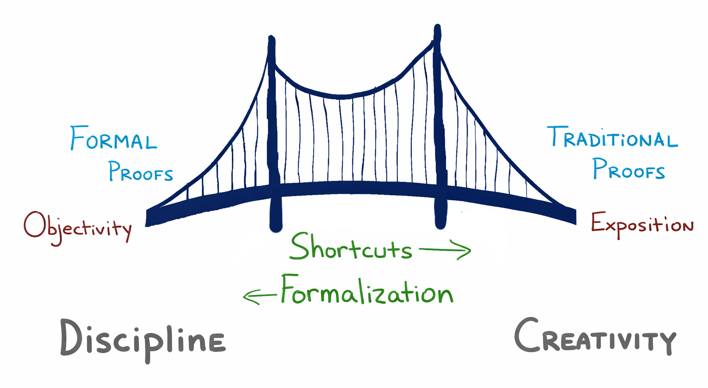

Simply stated
A proof is an explanation of why a statement is objectively valid.
Thus, we have two goals for our proofs.
However, these two goals are sometimes in conflict. So how to achieve both?
To be certain that our proof is correct, we need to be exceedingly careful and rigorous. To be clear in our exposition, we need to be succinct and elegant.
To obtain elegant clarity without sacrificing correctness, we will begin with proofs that are objectively correct by virtue of the fact that they can be verified by a machine. This style of proof is called a formal proof. Then we will use a well-defined set of proof shortcuts to eliminate tedious, repetitive, and uninteresting parts of our proofs. Thus, we will construct a bridge between our formal proofs and the more traditional proofs found in journals, textbooks, and problem solutions.

On the one hand, mathematical proofs need to be rigorous. Whether submitting a proof to a math contest or submitting research to a journal or science competition, we naturally want it to be correct. One way to ensure our proofs are correct is to have them checked by a computer. (Note that checking to see if a proof is correct is much easier for a computer to do than finding a proof in the first place.)
There is much discussion in mathematics today about the value of computer verified proofs and their counterparts - rigorous, detailed, formal proofs. Many mathematicians and computer scientists have been making a strong case for formal, rigorous, computer-verified proofs.
On the other hand, most mathematicians are attracted to mathematics because of its intrinsic beauty. A proof that communicates the key ideas of a proof to the reader in a succinct and beautiful way is very effective for its expository properties, even if it is not as rigorous as a formal proof. The legendary mathematician Paul Erdős always spoke of “The Book”, an imaginary book in which God had written down the best and most elegant proofs for mathematical theorems. When he saw any particularly inspiring proof, he would exclaim “That proof is from ‘The Book’!”
We will strive for both rigor and elegance in our proofs by building a bridge between highly rigorous formal proofs and more elegant traditional proofs. We begin with formal proofs.
“Math is a cross between art and law. Law is about the reasoning
and proving. And the art is because what we’re trying to prove are
statements that are somehow elegant. That’s where the artist
decides what is art.”
– US IMO Coach Po-Shen Loh, after his team won the 2015 IMO
We begin by playing with some simple “toy” proof systems that illustrate some aspects of formal proofs.
Definition. A Formal Proof System consists of
The goal of our game will be to determine when a statement in the system is a theorem. The theorems are, by definition, the valid statements in a formal system. They don’t need to be true about something else, via some interpretation of the statements. To determine a statement is valid in a formal system we only need to verify that it is a theorem.
As with English, Spanish, and other languages, the syntax and grammar that define the statements is called the language of the formal system.
The set of theorems must always be well defined in the sense that we have a mechanism for determining if a statement is a theorem. There are many ways to do that. Let’s illustrate a few.
Example 2.1. Consider a language with only the two statements Gina loves chocolate and Mocha is chocolate. There are four possible distinct formal systems we can define with this language.
In the first and third formal systems Gina loves chocolate is not a theorem, but in the second a fourth it is. Whether it is a theorem, and thus valid, only depends on what formal system we are considering, not whether it is ‘true’ about some actual person named Gina or actual yummie foods called mocha or chocolate.
This example illustrates one of the first and simplest mechanisms for determining if a statement is a theorem in a formal system - just list the theorems! Such statements, which are explicitly stated to be theorems are called the axioms of the system.
For small finite languages like the one in the example, specifying the theorems by simply listing them is perfectly resonable. But in mathematics our formal systems usually have infinitely many statements and infinitely many theorems, so listing them all as axioms individually becomes impractical. But fear not! There are many ways to overcome this limitation. For example, we might give some criterion that tells us which statements are theorems.
Example 2.2. Consider the formal system whose statements are the positive integers, and whose theorems are the even integers. Then we know $42$ is a theorem but $67$ is not. This system has infinitely many theorems, but we have specified them all by a rule which tells us how to easily determine if a statement is or is not a theorem very easily in a finite amount of time.
In more sophisticated mathematical systems there might not be such a simple direct criterion to immediately identify theorems.
Another way to specify the set of theorems in a formal system is to do it recursively.
Example 2.3. Consider the formal system whose set of statements is the set of all English words. The theorems are defined by the following rules.
cat is a
theorem.To claim that dog is a theorem we can write the
following.
Theorem: dog
and we can prove it as follows.
Proof.
cat is a theorem by Rule 0.cot is a theorem by applying Rule 1
to cat which is a theorem by line 1.dot is a theorem by applying Rule 1
to cot which is a theorem by line 2.dog is a theorem by applying Rule 1
to dot which is a theorem by line 3.$\square$
Notice that there might be more than one way to prove the same theorem.
Simiarly, we could specify the theorems in Example 2.2 recursively by saying that $2$ is a theorem, and that whenever $n$ is a theorem, so is $n+2$. Of course, it is much easier to define the theorems explicitly by just saying they are the even integers, but we obtain the same set of theorems either way.
In a recursively defined system it is also often interesting to show that one statement follows from some other statements $P_1,\ldots,P_n$ in the sense that if those statements were theorems, then we could prove that $Q$ is a theorem, too.
Example. Consider the formal system in the
previous example. Prove that cool follows from from
math.
Theorem: If math then
cool.
Proof.
math is a theorem.mats is a theorem by Rule 1 applied to line
2.mass is a theorem by Rule 1 applied to line
3.moss is a theorem by Rule 1 applied to line
4.most is a theorem by Rule 1 applied to line
5.cost is a theorem by Rule 1 applied to line
6.coot is a theorem by Rule 1 applied to line
7.cool is a theorem by Rule 1 applied to line
8.$\square$
Notice that math is definitely not a theorem in the
formal system defined in Example 2.3 (can you explain why?), but if it
were a theorem, then cool would be too. In other formal
systems this technique allows us to reduce the problem of proving that
$Q$ is the theorem to the problem of proving that the statements it
follows from are theorems (if indeed they are).
There are several examples of simple Formal Proof Systems available online at
Scrambler! is a formal proof system where the statements are finite sequences of colors. The Rules of Inference are permutations of these sequences (and so have one premise and one conclusion each). The goal is to apply the Rules to show that a given sequence of colors is provable from another given sequence of colors.
Try to find a strategy for reliably beating each of the difficulty levels (Weeny, Easy, Fun, Three Ring Circus, Frogs, Dizzy, Mutant Frogs, and Death!) of Scrambler! They are listed in increasing order of difficulty. Warning: it can be both addictive and hard!
Trix Game is a formal proof system where the statements are positive integers. There are only two Rules of Inference, both of which take a single positive integer as a premise, and return a single positive integer as their conclusion. This system illustrates a rule that has a condition on when you can use it. The goal is to show that a given positive integer is provable from the premise $1$ in the system.
Try to find a strategy for winning. Warning: if you can prove that you will always win this game no matter what integer you have for the goal, you will win money and be famous forever!
Circle-Dot is a formal proof system where the statements are just finite sequences of one or more circles and dots. This formal system has many of the features in common with actual mathematical formal axiom systems. There are five rules of inference, two of which are axioms. The goal is to prove various circle-dot strings in the system.
Define a toy recursive formal system as follows. The statements can be any finite string of one or more characters, and there are two rules of inference.
FLM is a
theorem.Notice that Rule 0 is an axiom.
GS?GS and LTR that are less than ten
characters long.Define a toy formal system as follows. The statements are all nonempty words that only contain the character $\star$. There are two rules of inference.
Define a toy formal system as follows. The statements are all
strings that begin with zero or more copies of the letter
Y followed by one or more copies of the letter
X. There are three rules of inference.
X is a
theorem.Y with YY and every X with
YX in a theorem is also a theorem.XXX either
at the start of the string or immediately following a
Y, then the string formed by replacing that
occurrance of XXX with Y is also a
theorem.Xs, then the string formed by deleting one of the two
Xs and then replacing every Y with
XX is also a theorem.For example, if you have YYYXX as a premise in Rule 3,
then you could conclude XXXXXXX.
XXXXX.YYY.YYX.